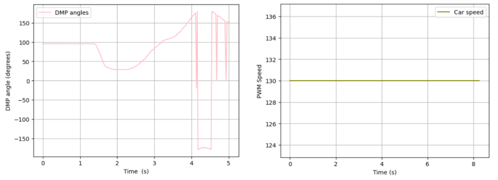

Lab 6：Orientation Control
Pre Lab
For this lab, we want to use IMU to implement orientation control. Based on the demo video,
we basically want to achieve that car can return to its original orientation to remain stationary
while its orientation is interrupted by external force.
To receive valid data from DMP, I included a boolean yaw_updated to have the check for availability for Quat6 data as an initization condition to start the loop.
if ((data.header & DMP_header_bitmap_Quat6) > 0) {
...
yaw_updated = true;
...
}
if (flag_pid && yaw_updated) {
fresh_IMU = micros();
orientation_control(); // Angle Difference Collection & PID calculation
collect_angles(); // Add values from each loop into arrays
motor_action(angle_error); // Motor Action corresponds to sign of Angle Differences
}
During the testing process, there are cases that car performed unsmoothly where friction really affects the rotation motion. Therefore, I set the speed within a range confirmed from Lab 4 where minimum speed is PWM 130.

When I was debugging my P-control, it happened that my car basically ignored the original position when shifting back and started tornado-rotation mode. Thanks to TA's help, I found out that my angle difference stay zero for longer time than it actually happened.
Watch the video of car keeping missing the original postion and starting tornado performance.Also in this process, TA reminded me that I should be able to provide gain from Python which is more efficient in tuning in the future.
Part 1 PID discussion

Watch the video of car performing position control on carpet floor with Kp of 0.15.Part 2 Range/Sampling Discussion
Reference
Thanks to Michelle Yang, Jack Long and Zoey Zhou for discussion about slow reaction/data logging rate.
I used chatGpt for clarifying questions, debugging such as finding missing parathesis, and brainstorming
the structure to build pre-lab code.